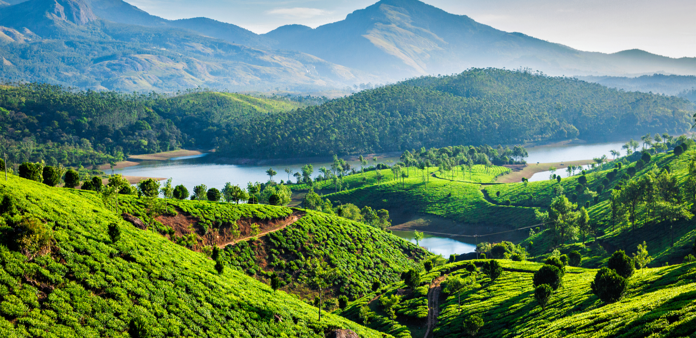
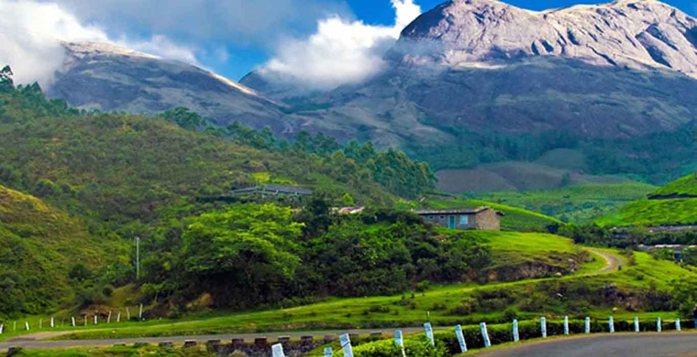

Top hill stations to visit in kerala
1. Munnar
Situated at the confluence of three rivers, Munnar is one of the famous hill stations in Kerala. Located at an elevation of about 1600m above sea level, this hill station is known for its unparalleled shades of green. The rolling tea-planted hills and the mist above them often offer a beautiful picture indeed! Munnar is an ideal place to relax, as it is serene and beautiful.
It can be called the natural spa of Kerala. Don’t just settle only for the excursion in the city, as there are several places that dot Munnar with gorgeous landscape. Pothamedu (6kms), Devikulam (7kms), Pallivasal (8kms), Attukal (9kms), Nyaymakad (10kms) and Mattupetty (13kms) are some of the must visit places around Munnar.
Most of these places boast great scenic beauty, waterfalls, trekking trails, lakes and dams. There are also many exhilarating places near Munnar like Top Station, where the famous Nilkurinji blooms once in 12 years, Marayoor, which is known for its abundant sandalwood, Chinnar Wildlife Sanctuary and Eravikulam National Park that offer great view of the diverse wildlife of South India.
2. Thekkady

Explore the wild side of Kerala at Thekkady. Another beautiful hill station from the pocket of Idukki District, Thekkady is an excellent place to get rejuvenated. Far from the maddening crowd of the city; enjoy an uninterrupted holiday amidst the lush flora and diverse fauna that is enveloped by green rolling hills. Periyar Wildlife Sanctuary, which is home to many elephants, is one of the prime attractions in Thekkady. Elephant safaris and the boat cruise on the Periyar Lake are great attractions in the wildlife sanctuary. Trekking is yet another activity that you would enjoy the most in Thekkady and Kurisumala is one such great trek. Mangala Devi Temple, Pandikuzhi, Vandiperiyar and Ramakkalmedu are the must visit places in Thekkady, Kerala.
3. Vagamon

A summer destination, Vagamon is situated 1200m above sea level. Marked by the lofty green mountains, cascading waterfalls, pine forests and the meandering roads cutting through the mountains, Vagamon is an ideal place to find solace and peace of mind. Far away from the confines of bustling city noises, this hill station can be a great weekend getaway. You can visit Vagamon and enjoy some quiet time; the perfect environ gives you opportunity to practice meditation as well. Go to the famed Meenachil River, which has been mentioned by Arundhati Roy in her masterpiece ‘God of Small Things’. Also witness the majestic Illikal Peak, Poonjar Palace and Maramala Waterfalls in Vagamon.
4. Ponmudi
Located about 61kms away from Thiruvananthapuram, Ponmudi is a small picturesque hill station in Kerala. Pleasant climate, superlative landscape with ravines, rivers, mountains and forests to accompany, Ponmudi proves to be one of the best hill stations in Kerala. At Ponmudi, you can enjoy trekking and hiking, especially at the Agasthyarkoodam, which is the highest peak of the district. The view of the sprawling tea gardens mesmerizes every traveller here. A little less explored, Ponmudi is an excellent getaway for the nature lovers. Outstanding views and soothing weather, there can’t be anything better than just being in Ponmudi! Peppara Wildlife Sanctuary, Deer Park, Golden Valley and Meenmutty falls are some of the places that you must visit in Ponmudi.
5. Nelliyampathy

From the town of Nenmara in Palakkad district, the cloud-caressed peaks of the majestic Nelliyampathy Hill ranges are a sight to behold. The height of the hills ranges from 467 m to 1,572 m and it has an extremely calming effect on all who view it. To reach Nelliyampathy, one has to take the road starting from Nenmara that proceeds to the Pothundy Dam. There are about 10 hairpin bends that have to be negotiated on the way to Nelliyampathy.Not far away from Palagapandy is Seetharkundu where one can have a fantastic view of the valley and a 100-m high waterfall providing an added attraction.